class: center <br> # Spatial Analysis of Urban Data ### Lecture: Spatial Data Processing, Cleaning, Integration and Feature Engineering [Bayi Li](mailto:barryli081@gmail.com) .toc-wrapper[ <div class="toc"> <a href="#processing-focus" class="toc-item">1. Frame the Question</a> <a href="#preparation" class="toc-item">2. Prepare Locations</a> <a href="#maup" class="toc-item">3. Choose Units and Integrate</a> <a href="#interpolation" class="toc-item">4. Estimate Surfaces</a> <a href="#feature-overview" class="toc-item">5. Construct Features</a> <a href="#robustness" class="toc-item">6. Validate and Document</a> </div> ] --- name: processing-focus ## From Urban Data to Defensible Features **Running question:** which neighbourhood characteristics are associated with access to everyday services? | Stage | Decision | Output | |---|---|---| | 1. Frame | What does one row represent, and for which period? | Question + target unit | | 2. Prepare | Are locations, geometries and identifiers usable? | Checked input layers | | 3. Integrate | Which units and matching rules connect the inputs? | One table, with every input on the same units | | 4. Estimate | Do we need values between measured locations? | A map of estimates, with gaps marked | | 5. Construct | How does each variable measure a concept? | Variables with clear formulas | | 6. Validate | Do results survive changes in scale and assumptions? | Evidence + documented limitations | **By the end:** explain and apply these decisions, from checking geometry and geocoding to interpreting entropy, interpolation and scale sensitivity. The POI (point of interest) examples follow the main workflow. The haze example shows how to estimate values between measurements; the park-review example asks what a derived variable really measures. --- name: integration ## 1. Frame the Question: What Are We Building? .left_half[ ### From Clean Layers to Useful Features Cleaning prepares each input. **Integration** links the inputs to the same set of units, such as zones. **Feature engineering** turns them into variables we can measure and compare. - Integrate buildings, POIs, roads, population and imagery. - Choose the units, dates, matching rules and how values are summarised. - Construct density, diversity, accessibility and urban-form features. - Check coverage, and whether results change with your choices. **Running question:** which neighbourhood characteristics are associated with access to everyday services? ] .right_half[ ### Journal Case Study: A Common Urban Network <figure class="journal-figure"><p>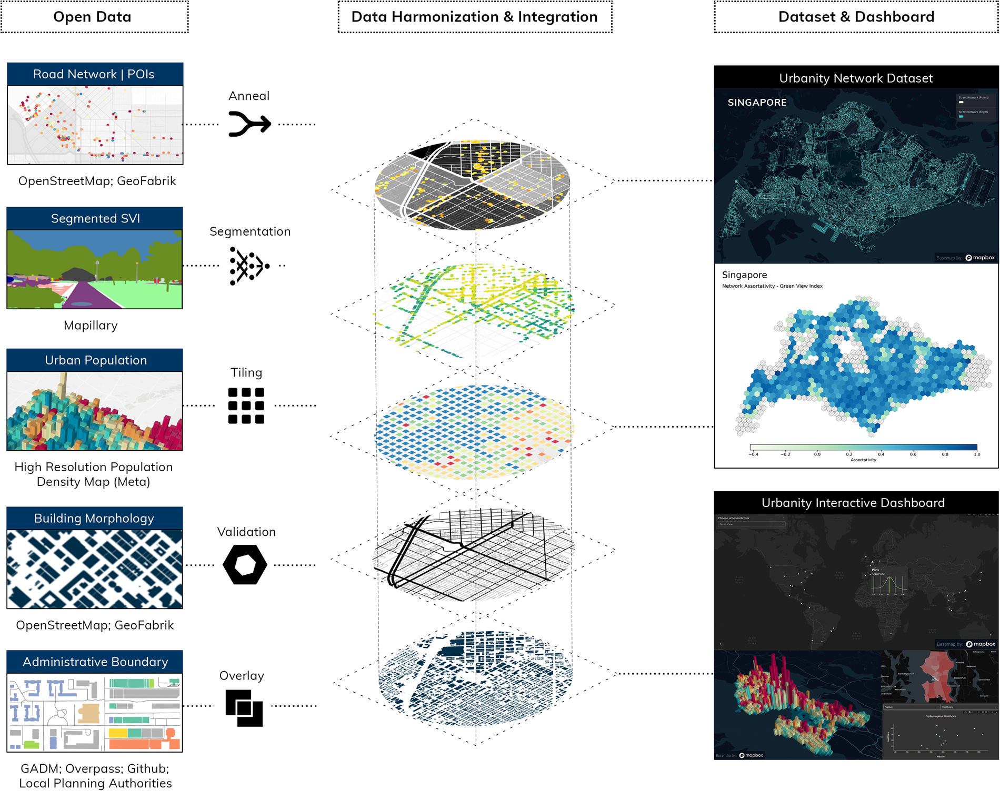</p><figcaption>A workflow combining many kinds of urban data into street networks with rich attributes.</figcaption><figsubcaption>Yap & Biljecki (2023), <i>Scientific Data</i> 10, 667, Fig. 1. <a href="https://doi.org/10.1038/s41597-023-02578-1">Paper</a> · <a href="https://creativecommons.org/licenses/by/4.0/">CC BY 4.0</a>; reproduced without alteration. OpenStreetMap contributors, Mapillary and Meta; basemap: OpenStreetMap and Mapbox.</figsubcaption></figure> **Discuss:** Which object receives the features: a pixel, a building, a street segment or an intersection? ] --- name: preparation ## 2. Prepare Inputs Before Combining Them .cols[ .cell[ ### Check the Location and the Record - Define what one input row represents: a place, building, review or measurement. - Check the coordinate reference system (CRS) and whether coordinates are lat/lon or lon/lat; confirm that locations fall in the study area. - Confirm which CRS the data were made in before setting it; convert to a CRS in metres before measuring distance or area. - Preserve identifiers, standardise categories and distinguish missing values from zero. - Inspect duplicates and dates before deciding which records to retain. ] .cell[ ### Follow the Available Location Information | Input | Next step | |---|---| | Existing geometry | Check validity and relationships between features | | Address or place name | Geocode, then inspect match quality | | Place-linked record | Keep the place ID and note how precise its location is | **Output:** checked layers, with unresolved records kept for review and every change logged. Next, we examine geometry checks and geocoding before choosing how these layers will be combined. ] ] --- name: geometry class: dense ## 2. Prepare: Check Geometry and Topology .left_half[ ### Four Geometry States to Distinguish <div class="dg" style="--n:2; column-gap:.3em"> <div class="box">Missing: no geometry object (`None`).</div><div class="box">Empty: an object with no coordinates.</div> <div class="center">None</div><div class="sub center">POLYGON EMPTY</div> <div class="sub center">No geometry</div><div class="sub center">No coordinates</div> </div> <div class="dg" style="--n:2; column-gap:.3em"> <div class="box">Invalid: coordinates violate geometry rules.</div><div class="box">Valid: passes geometry rules; may still be misplaced. </div> <svg class="err" viewBox="0 0 100 100"><path d="M5 5 95 95H5L95 5Z"/></svg><svg viewBox="0 0 100 100"><path d="M5 5H95V95H5Z"/></svg> <div class="sub center">Self-intersection</div><div class="sub center">Passes validity</div> </div> <figure><p>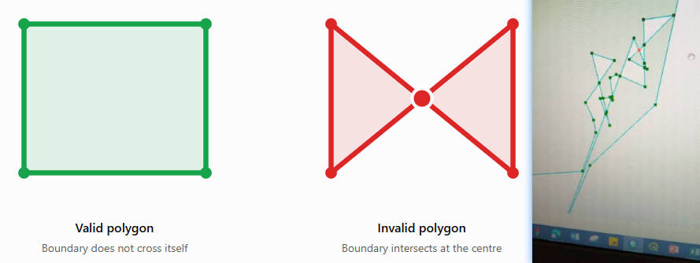</p><figcaption>Normal polygon and self-intersected polygon and one real example of self-intersected polygon.</figcaption><figsubcaption><a href="https://www.facebook.com/groups/GISandITTools/posts/871901557482228/">Facebook post of self intersected polygons.</a>.</figsubcaption></figure> Why is a self-intersection invalid? A polygon's outline must be a closed loop that never crosses itself. At the crossing, **which area is inside and which is outside** becomes unclear. .references[ - [GeoPandas: missing and empty geometries](https://geopandas.org/en/stable/docs/user_guide/missing_empty.html) ] ] .right_half[ ### Valid Shapes Can Still Connect Wrongly <figure><p>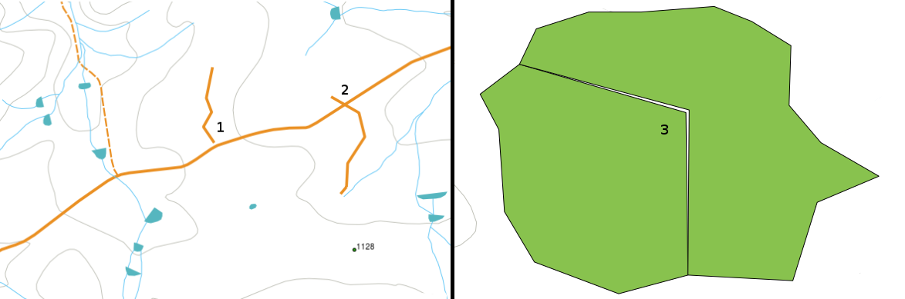</p><figcaption>1: undershoot (line stops short); 2: overshoot (line runs past); 3: sliver (thin gap between polygons).</figcaption><figsubcaption>QGIS Project, <a href="https://docs.qgis.org/3.44/en/docs/gentle_gis_introduction/topology.html">A Gentle Introduction to GIS: Topology</a>, QGIS 3.44. Unmodified image; <a href="imgs/data_cleaning/QGIS-GFDL-1.3.txt">GNU FDL 1.3+</a>.</figsubcaption></figure> **Topology** is how features connect and share boundaries. A shape can be valid on its own while its relationship to neighbours is wrong. - Two lines crossing on the map are not always connected in reality. - Roads that should connect may stop short. - Administrative polygons may overlap. - Polygons meant to cover an area completely may leave gaps. **Rules depend on meaning:** a dead-end street is not automatically an error; a road crossing on a bridge may not be a junction. ] --- name: geocoding class: dense ## 2. Prepare: Geocoding and Reverse Geocoding .cols3[ .cell[ ### Turning Text into Locations <div class="dg map"> <div class="box"><b>Address or postcode</b><br>640 Rowell Road, Singapore</div><div class="arrow">→<br><span class="sub">geocode</span></div><div class="box bg-ok"><b>Point</b><br>1.30744, 103.85471<br><span class="sub">+ match level</span></div> <div class="box"><b>Nearest address</b><br>640 Hindoo Road, 200640</div><div class="arrow">←<br><span class="sub">reverse</span></div><div class="box bg-ok"><b>Coordinate</b><br>GPS fix, photo or sensor</div> </div> **Geocoding** converts addresses, postcodes or place names into coordinates. **Reverse geocoding** finds the address or place nearest to a coordinate. - Turn survey postcodes, case lists or business lists into points you can link to zones. - Label GPS traces, photos or sensors with an address or postcode. **A geocoded point is the service's best guess from its address database, not a measured location.** ] .cell[ ### Services and Tools | Service | Coverage and cost | Notes | |---|---|---| | [OneMap](https://www.onemap.gov.sg/apidocs/) (SLA) | Singapore; free | Search answers without a token; reverse geocoding needs one | | [Nominatim](https://nominatim.org) (OSM) | Global; free public server | Max 1 request/s; identify your app; no heavy bulk use | | [Google Maps Platform](https://developers.google.com/maps) | Global; billed per request | API key and billing account | | [Mapbox](https://www.mapbox.com) / [ArcGIS](https://www.esri.com) | Global; free up to a limit | Check whether results may be stored | [geopy](https://geopy.readthedocs.io) offers one Python interface to many of these services. Read the terms before geocoding many addresses: some limit how fast you can query, whether you may store results, or whether you may show them on another company's map. Treat API keys as passwords: keep them out of notebooks and Git ([data lecture](data.html)). .references[ - [Nominatim usage policy](https://operations.osmfoundation.org/policies/nominatim/) · [OneMap API](https://www.onemap.gov.sg/apidocs/) · [geopy](https://geopy.readthedocs.io/en/stable/) - OpenCage: [postcodes and geocoding](https://opencagedata.com/guides/how-to-think-about-postcodes-and-geocoding) ] ] .cell[ ### Pitfalls: Names and Codes Are Not Unique Nominatim, queried 17 Nov 2026: - `"SUTD"` → a **mountain peak in Himachal Pradesh, India**. - `"SUTD"` with `country_codes="sg"` → a campus sports centre. - Full name + `", Singapore"` → Tampines, as intended. Add the country and postcode. A Singapore postcode usually marks one building; an Indonesian *kode pos* covers whole neighbourhoods. Record the **match level**: building, street, or only the centre of an area. When many addresses share one coordinate, the service has usually fallen back to an area's centre. **Reverse results depend on the service's database:** OneMap's point for 640 Rowell Road returns *640 Hindoo Road* from Nominatim, same postcode. Compare postcodes, not the address text. ] ] ??? The Nominatim outputs were checked on 17 Nov 2026 with geopy 2.4.1. The same full-name query returned coordinates about 100 m apart on two calls that day, so store the query date and service with each result and do not expect identical reruns. The Rowell/Hindoo example is a round trip across two services: OneMap geocoded postcode 200640, and Nominatim reverse-geocoded that point. Neither road name proves the other wrong; the matching postcode is the more reliable check. --- class: dense ## 2. Prepare: Geocoding in Python .cols3[ .cell[ ### geopy + Nominatim: Both Directions ```python from geopy.geocoders import Nominatim from geopy.extra.rate_limiter import RateLimiter app = Nominatim(user_agent="sdp-yourname") wait = {"min_delay_seconds": 1} # max 1 request/s geocode = RateLimiter(app.geocode, **wait) reverse = RateLimiter(app.reverse, **wait) q = "Singapore University of Technology and Design" loc = geocode(q + ", Singapore") loc.latitude, loc.longitude # ≈ (1.34, 103.96) reverse((1.3413, 103.9638)).address # 'Building 3, 8, Somapah Road, ..., 487372, ...' ``` `loc.raw` holds the response as a dictionary, including `display_name` and `addresstype`. An unmatched query returns `None`: check before reading attributes. ] .cell[ ### OneMap: Singapore Addresses ```python import os, requests base = "https://www.onemap.gov.sg/api" q = {"searchVal": "200640", "returnGeom": "Y", "getAddrDetails": "Y", "pageNum": 1} r = requests.get(f"{base}/common/elastic/search", params=q, timeout=10).json() hit = r["results"][0] # check r["found"] > 0 hit["ADDRESS"] # '640 ROWELL ROAD ... 200640' ``` Values arrive as text. `LATITUDE`/`LONGITUDE` are GPS-style degrees (WGS84); `X`/`Y` are Singapore's map coordinates in metres (SVY21, EPSG:3414). Reverse geocoding requires a token: ```python token = os.environ["ONEMAP_TOKEN"] # never hard-code r = requests.get(f"{base}/public/revgeocode", params={"location": "1.30744,103.85471", "buffer": 40, "addressType": "All", "otherFeatures": "N"}, headers={"Authorization": token}, timeout=10) ``` ] .cell[ ### Batch Geocoding Workflow 1. **Standardise** before querying. NEA dengue clusters list `Jurong West Avenue 1(Blk 537A)`; searches expect `537A Jurong West Avenue 1`. ```python def tidy(a): # "Rd(Blk 537A)" -> "537A Rd" m = re.match(r"(.+?)\s*\(Blk (\w+)\)$", a) return f"{m[2]} {m[1]}" if m else a ``` 2. **Save** each unique result (a cache) so reruns do not query the service again. 3. **Keep failures** in the table; send only those to a paid service. 4. **Check** points fall in the study area; inspect duplicate coordinates and postcodes. 5. **Store** `service`, `match_level` and `query_date` with the coordinates. ```python pts = gpd.points_from_xy(df["lon"], df["lat"]) gdf = gpd.GeoDataFrame(df, geometry=pts, crs=4326) ``` ] ] --- name: geocoding-hdb class: dense ## 2. Prepare: A Real Geocoding Task with HDB Resale Prices .cols[ .cell[ ### The Data Have Addresses, Not Coordinates [Resale flat prices from Jan 2017](https://data.gov.sg/datasets/d_8b84c4ee58e3cfc0ece0d773c8ca6abc/view) (HDB, data.gov.sg) lists every HDB resale, updated monthly: | month | town | block | street_name | resale_price | |---|---|---|---|---| | 2017-01 | ANG MO KIO | 406 | ANG MO KIO AVE 10 | 232,000 | | 2017-01 | ANG MO KIO | 108 | ANG MO KIO AVE 4 | 250,000 | There is no latitude, longitude or postcode. To map prices, or link them to MRT stations or planning areas, you must geocode `block + street_name`. **Geocode addresses, not rows:** the file downloaded on 17 Nov 2026 has **244,894 sales** but only **9,772 unique addresses**, about 25 sales per address. **Practice file:** [hdb_resale_sample.csv](data/hdb_resale_sample.csv), 50 sales at 35 addresses. **Full dataset:** Download on the [data.gov.sg page](https://data.gov.sg/datasets/d_8b84c4ee58e3cfc0ece0d773c8ca6abc/view). ### Test Run: 100 Random Addresses, OneMap, 17 Nov 2026 - **All 100** matched the right block on the right street, including HDB abbreviations: `JLN BT MERAH` → JALAN BUKIT MERAH. - **17** returned more than one result. Most were the same block listed twice, but `43 HOLLAND DR` also matched **43 HOLLAND GROVE DRIVE**, a private estate 1.5 km away. ] .cell[ ### Geocode Once, Check, Then Join Back ```python import pandas as pd, requests, time URL = "https://www.onemap.gov.sg/api/common/elastic/search" df = pd.read_csv("data/hdb_resale_sample.csv", dtype=str) df["addr"] = df.block + " " + df.street_name todo = df.addr.drop_duplicates() # 35 addresses, not 50 rows def same(h, addr): # right block and street? blk, st = addr.split(" ", 1) ini = lambda s: "".join(w[0] for w in s.split()) # JLN → J return h["BLK_NO"] == blk and ini(h["ROAD_NAME"]) == ini(st) hits = {} for a in todo: q = {"searchVal": a, "returnGeom": "Y", "getAddrDetails": "Y", "pageNum": 1} res = requests.get(URL, params=q, timeout=10).json()["results"] hits[a] = next((h for h in res if same(h, a)), None) time.sleep(0.3) # OneMap: max 250 calls/min geo = pd.DataFrame([{"addr": a, **h} for a, h in hits.items() if h]) df = df.merge(geo[["addr", "LATITUDE", "LONGITUDE", "POSTAL"]], on="addr", how="left") # unmatched sales keep NaN ``` `same()` keeps a result only if the block matches and each street word starts with the same letter, since abbreviations keep the first letter. Unmatched addresses stay in the table for review. The sample runs in about 15 seconds. For the full dataset, the 9,772 addresses take about 70 minutes: save `geo` to a file and reuse it. **Discuss:** every sale in a block shares one point. What is the finest scale at which you can compare prices? ] ] .references[ - Contains information from [Resale flat prices based on registration date from Jan-2017 onwards](https://data.gov.sg/datasets/d_8b84c4ee58e3cfc0ece0d773c8ca6abc/view) (HDB), accessed on 17 November 2026 from data.gov.sg, which is made available under the terms of the [Singapore Open Data Licence version 1.0](https://data.gov.sg/open-data-licence). - [OneMap API: search](https://www.onemap.gov.sg/apidocs/search) ] ??? The practice file data/hdb_resale_sample.csv holds 50 unaltered rows from that download: 35 addresses drawn from the 100 tested ones (including the Holland Drive and abbreviation cases), 15 of them with their two most recent sales. Numbers come from the full CSV downloaded on 17 Nov 2026 (data.gov.sg last updated 17 Nov 2026; coverage Jan 2017 to Nov 2026). The test used a random sample of 100 unique addresses (pandas random_state=42) and the code on this slide, unchanged except that todo was limited to the sample. Each call took about 0.43 s including the 0.3 s pause; at OneMap's cap of 250 calls a minute the full run cannot be shorter than about 39 minutes. The first-letter check is a teaching shortcut. It handles HDB abbreviations (NTH, UPP, BT, JLN, C'WEALTH, ST.) but could accept a different street with the same initials; for production work, also compare the town or check the returned postcode against an HDB block list. 43 HOLLAND GROVE DRIVE (postcode 278878) is 1.5 km from 43 HOLLAND DRIVE (270043). Block-level points mean every flat in a block shares one location; storey and unit position are not available, so the finest defensible unit is the block. --- name: maup class: dense ## 3. Choose Units: Why Scale and Boundaries Matter .cols12[ .cell[ ### Same Data, Different Units, Different Answers The modifiable areal unit problem (MAUP): when point data are summarised into areas, the results depend on how big the areas are and where their boundaries fall. It has two parts: - **Scale effect:** results change with the size of the units. Larger units average out local differences, so relationships often look stronger. - **Zoning effect:** results change with where the boundaries fall, even when the units are the same size. **Before joining layers, choose the units that will receive their values.** Administrative zones are drawn for running the city, not for your question: a result for zones holds *for those zones*. A pattern across areas does not tell you how individuals behave. **Discuss:** which of the three correlations would you report, and why? ] .cell[ <figure><p>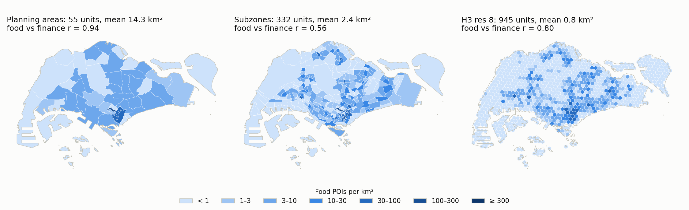</p><figcaption>The same food POIs mapped by planning area, subzone and H3 cell.</figcaption><figsubcaption>Data: LTSG POI sample (8,672 POIs); URA Master Plan 2019 planning areas and subzones; H3 v4 cells. <a href="imgs/spdeng/IMAGE_CREDITS.md">Credits</a>.</figsubcaption></figure> Nothing in the POI data changed between the three maps; only the units did. Across planning areas, food and finance density have a correlation of r = 0.94, suggesting they almost always appear in the same places. Across subzones the same points give r = 0.56. ] ] .references[ - Openshaw, S. (1984). *The Modifiable Areal Unit Problem*. CATMOG 38. Norwich: Geo Books. - Openshaw, S., & Taylor, P. J. (1979). A million or so correlation coefficients: Three experiments on the modifiable areal unit problem. In N. Wrigley (Ed.), *Statistical Applications in the Spatial Sciences* (pp. 127–144). London: Pion. - Fotheringham, A. S., & Wong, D. W. S. (1991). [The modifiable areal unit problem in multivariate statistical analysis](https://doi.org/10.1068/a231025). Environment and Planning A, 23(7), 1025–1044. ] ??? r is the Pearson correlation between food POI density and finance POI density (POIs per km²) across all units, including units with no POIs. A rank (Spearman) correlation gives the same ordering: 0.84 for planning areas and 0.57 for subzones. A few very small central subzones with extreme densities pull the subzone value down; small units producing unstable rates is itself part of the MAUP. Openshaw and Taylor (1979) showed that re-aggregating the same Iowa county data could produce almost any correlation between two variables. That is the classic demonstration of the zoning effect. --- name: h3-grid class: dense ## 3. Choose Units: H3 as a Common Grid .cols[ .cell[ ### What H3 Is H3 is a **global grid of hexagons**, released as open source by Uber (a type of discrete global grid system, or DGGS). It covers the Earth at 16 cell sizes, called resolutions 0–15, and every cell has a unique ID, such as `886526add1fffff`. - **Nested sizes:** each hexagon is covered by seven smaller cells at the next resolution, and a cell's ID tells you which larger cell it belongs to. - **Even neighbours:** a hexagon's six neighbours are all about the same distance away, which makes comparing a cell with its neighbours simple. - **Same grid everywhere:** any dataset, city or year can be linked by cell ID. | Resolution | Mean area (global) | Cells on Singapore land | |---|---|---| | 7 | 5.2 km² | 136 | | 8 | 0.74 km² | 945 | | 9 | 0.11 km² | 6,576 | **Caveats:** cell area varies by location (a res-8 cell over Singapore is 0.84 km²), and the smaller cells do not fit exactly inside their larger cell. ] .cell[ <figure><p>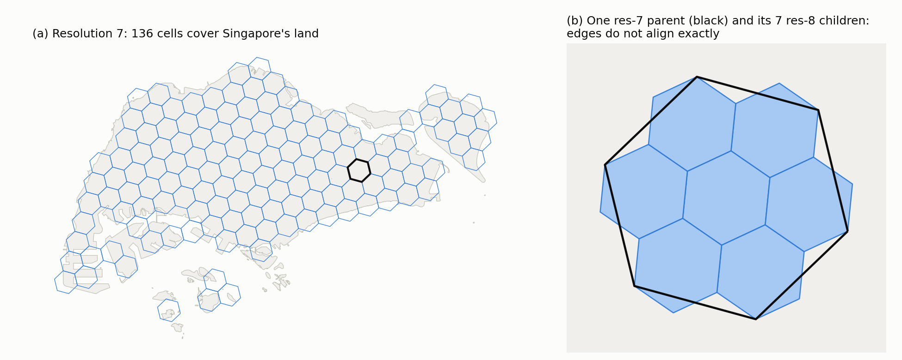</p><figcaption>H3 cells over Singapore, and how one larger (parent) cell splits into seven smaller (child) cells.</figcaption><figsubcaption>Computed with h3 4.4.2; land outline: URA Master Plan 2019 planning areas. <a href="imgs/spdeng/IMAGE_CREDITS.md">Credits</a>.</figsubcaption></figure> ### Python: Count POIs per Cell ```python import h3 poi["h3_8"] = [h3.latlng_to_cell(lat, lng, 8) for lat, lng in zip(poi.lat, poi.lng)] cells = sorted(h3.geo_to_cells(land, 8)) # all land cells n = (poi.groupby("h3_8")[["food", "finance"]].sum() .reindex(cells, fill_value=0)) # keep empty cells ``` `land` is a Shapely polygon in EPSG:4326; cells whose centre is on land are kept. For maps, `h3.cell_to_boundary(cell)` returns the corners as (lat, lng) pairs. ] ] .references[ - H3 documentation: [overview](https://h3geo.org/docs/), [cell statistics by resolution](https://h3geo.org/docs/core-library/restable/) and [hierarchical indexing](https://h3geo.org/docs/highlights/indexing/). ] ??? A discrete global grid system such as H3 replaces arbitrary administrative zoning with a uniform, reproducible one. That makes comparison across places and years consistent, and multi-resolution checks cheap. It does not remove the MAUP: the scale effect remains, because results vary across resolutions, and the zoning effect remains, because a hexagon grid is still one partition of space. H3's fixed global placement also means offset grids cannot easily be tested. Technical caveats: cell area varies with location (a resolution-8 cell at Singapore's latitude is about 0.84 km², against a 0.74 km² global average, computed with h3 4.4.2), and child cells do not nest exactly inside their parent, so roll-ups across resolutions are approximate. Each resolution also contains 12 pentagons, which have five neighbours. Support: census counts published by subzone must be reallocated, by areal weighting or dasymetric mapping, before they exist on a grid; fine-resolution values then reflect that assumption rather than new observations. Data located only at a coarse support, such as reviews attached to a place entry, cannot become more precise by assigning them to small cells. --- name: integration-contract ## 3. Integrate: Put Every Input on the Same Units .left_half[ ### Build an Integration Contract One row per input: what its spatial unit is, which date it describes, and how it reaches the target units. | Input | Spatial unit | Time | Integration rule | |---|---|---|---| | Census population | Census zones | Reference year | Join by verified zone code | | POIs | Points | Extraction date | Assign to zone; count by category | | Buildings | Footprints | Update date | Split by zone; sum footprint area | | Satellite greenness | Pixels | Season-average image | Average per zone, plus share of usable pixels | | Transit | Stops + timetable | Service date | Travel time to services along the network | Record units, coverage, licence and missing values. **Matching the CRS is only one step in making inputs comparable.** ] .right_half[ ### Journal Example: Make Inputs Comparable First <figure class="journal-figure"><p>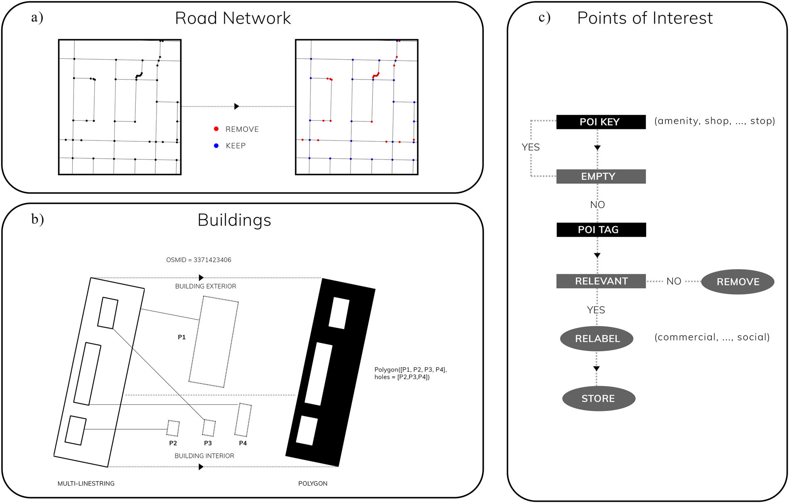</p><figcaption>Cleaning road networks, building footprints and points of interest before combining them.</figcaption><figsubcaption>Yap & Biljecki (2023), <i>Scientific Data</i> 10, 667, Fig. 2. <a href="https://doi.org/10.1038/s41597-023-02578-1">Paper</a> · <a href="https://creativecommons.org/licenses/by/4.0/">CC BY 4.0</a>; reproduced without alteration. OpenStreetMap contributors.</figsubcaption></figure> **Discuss:** Why would assigning identical category names be insufficient to make two POI sources comparable? ] --- name: integration-rules ## 3. Integrate: Match, Aggregate and Check **Target:** one row per chosen area and period. Each input needs a rule for reaching that target. | Input relationship | Operation | Check before accepting the result | |---|---|---| | Table and zones share an ID | Join on the ID | IDs are unique; unmatched IDs; rows unexpectedly duplicated | | POIs fall inside zones | Spatial join (point in zone), then count by category | Same CRS; points on boundaries; points outside every zone; points counted twice | | Buildings cross zone boundaries | Split by zone, then sum each piece's area | Don't count a whole building in every zone it touches | | Raster pixels overlap zones | Summarise pixels per zone | Missing pixels (NoData); share of the zone covered; whether a mean or a sum fits the variable | Keep every target area in the table, even empty ones: **zero POIs found** and **no data for this area** are different. **Checkpoint:** count matched, unmatched and double-matched records, and make the totals add up, before building any feature. **Next:** if you only have a few measurement points, first decide whether estimating values between them is justified. --- name: interpolation ## 4. Estimate Surfaces: When Measurements Are Few .left_half[ ### Interpolation: Estimate Values Between Observations A **surface** is a continuous map of estimated values. **Use this step for measurements that vary smoothly across space, such as air quality or elevation. POI counts and place-linked reviews do not need it.** **Points or lines:** measured values at points, or heights along contour lines, can be turned into a surface. **Grids (rasters):** an existing grid can be recalculated onto different cells (resampling), or missing cells can be filled. - Example: estimate PM2.5 between NEA's regional readings during the October 2026 haze. - Example: line up an elevation grid with the grid used for analysis. - Choose the method from the variable, where the measurements are, and what the result is for. **Interpolation estimates values; smaller output cells do not add new measurements.** ] .right_half[ ### Same Observations, Different Surfaces **Running example, 2026 haze:** smoke from fires in Kalimantan and Sumatra. At 4pm on 14 Oct, [NEA reported](https://www.nea.gov.sg/media/news/advisories/index/haze-situation-update-14-october-2026) 1-hr PM2.5 of 139–251 µg/m³ across five regions. <figure><p>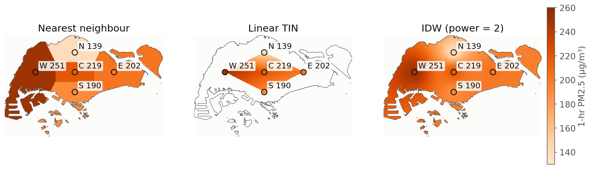</p><figcaption>Nearest, linear TIN and IDW use the same five haze readings (14 Oct 2026, 4pm).</figcaption><figsubcaption>Computed from NEA 1-hr PM2.5 regional readings; points are region label locations, not monitor sites. <a href="imgs/spdeng/IMAGE_CREDITS.md">Data credits</a>.</figsubcaption></figure> Land left blank in the linear result lies outside the **convex hull**: the shape a rubber band makes around the five readings. Inside it, every location has readings on several sides, so estimates are bracketed by data (**interpolation**). Outside it, at least one side has no data, so any value is a guess beyond the last reading (**extrapolation**). Nearest and IDW still return values there, but only by assumption. ] --- class: dense ## 4. Estimate Surfaces: Compare Methods .cols3[ .cell[ ### Inverse Distance Weighting (IDW) .right_half[ <figure><p>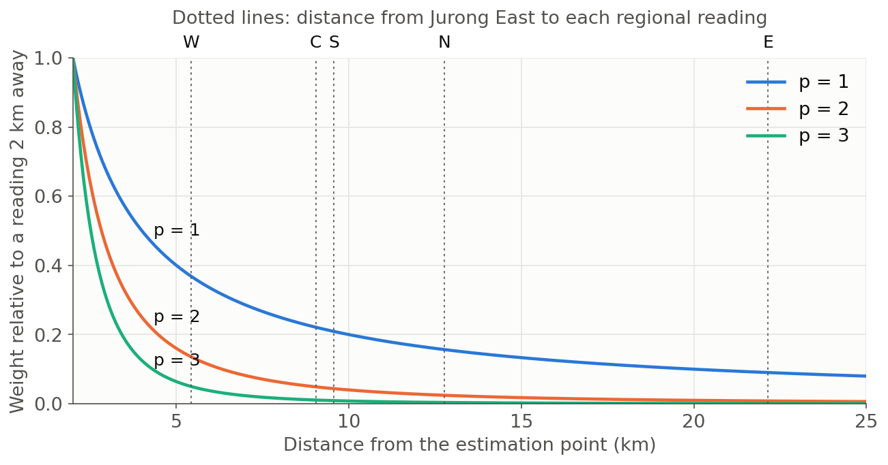</p><figcaption>Increasing the power makes nearby observations more influential.</figcaption><figsubcaption>Dotted lines: distances from Jurong East to the five regional readings. There, powers 1, 2 and 3 give 211, 223 and 233 µg/m³. <a href="imgs/spdeng/IMAGE_CREDITS.md">Data credits</a>.</figsubcaption></figure> ] Each estimate is a weighted average of the readings, and nearer readings get more weight: **ẑ(s) = Σ wᵢ(s)zᵢ / Σ wᵢ(s)**, with **wᵢ = 1 / dᵢᵖ**. - Choose the power p, and how far away or how many readings to include. - At a measured location it returns the measured value, so fix duplicate readings at the same spot first. - Unevenly spaced readings can create rings around each point (“bullseyes”). - Estimates never go above the highest, or below the lowest, reading used. Measure distance in metres; barriers can make straight-line distance misleading. IDW also ignores the southeasterly wind that carried the smoke. ] .cell[ ### Linear TIN: Triangles Between Readings .right_half[ <figure><p>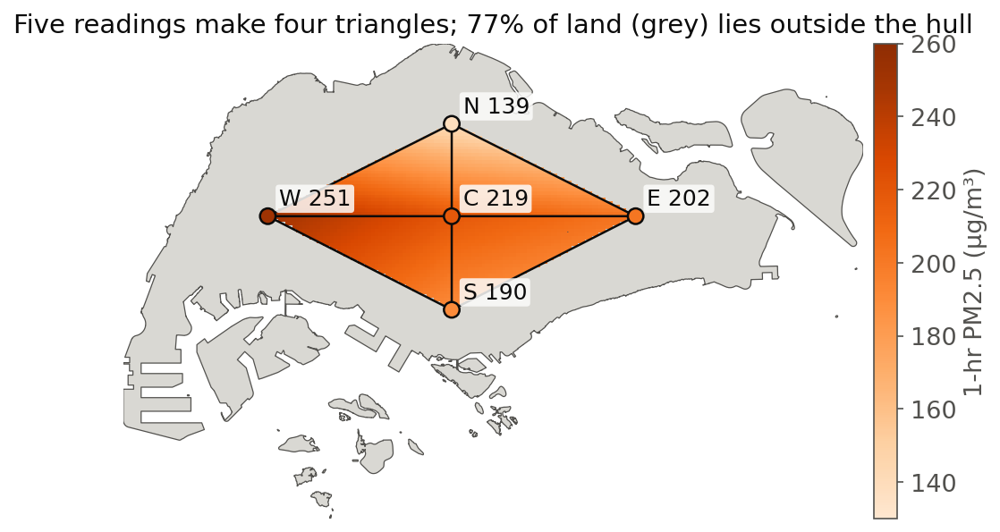</p><figcaption>A triangulated irregular network (TIN) joins the readings into triangles.</figcaption><figsubcaption>Five haze readings, 14 Oct 2026, 4pm; grey land has no TIN estimate. <a href="imgs/spdeng/IMAGE_CREDITS.md">Data credits</a>.</figsubcaption></figure> ] The readings are joined into triangles; inside each triangle, values change along a flat, tilted plane. - Returns the measured value at each reading. - No jumps, but the slope changes at triangle edges. - For terrain, contour lines need height values; breaklines (such as cliff edges) keep sharp changes sharp. - Few or badly placed readings make large triangles: five haze readings leave 77% of Singapore's land outside the hull. Adding points along a contour line refines its shape; it adds no new height measurements. ] .cell[ ### Other Methods | Method | Main idea | Important limitation | |---|---|---| | Nearest neighbour | Use the closest observed value | Abrupt boundaries | | Spline / radial basis function | Fit a smooth, bendy surface | Can overshoot, or smooth away real sharp changes | | Ordinary kriging | Model how similarity between readings falls with distance (a variogram) | Needs many readings; results depend on the fitted model | | Regression kriging | Predict from related variables (e.g. land use), then interpolate what is left over | Both steps need checking | Kriging also gives an uncertainty map, but it is only as good as the fitted model. More complex methods are not automatically better: five haze readings are too few to fit a variogram. ] ] --- ## 4. Estimate Surfaces: Implement and Check .left_half[ ### QGIS: From Measured Points to a Raster 1. Load points with a numeric measurement field and verified CRS. 2. Remove or flag invalid readings; inspect duplicate locations and dates. 3. Convert to a local CRS in metres so distances are correct. 4. Search the Processing Toolbox for **IDW interpolation** or **TIN interpolation**. 5. Select the value field, extent and output cell size; record parameters. 6. Blank out areas with no nearby readings, and test estimates against readings you held back. TIN can also take lines, such as breaklines, as input. Never interpolate an ID field: an average of two IDs means nothing. .references[ - [QGIS: spatial interpolation](https://docs.qgis.org/3.44/en/docs/gentle_gis_introduction/spatial_analysis_interpolation.html) ] ] .right_half[ ### Python: Interpolate a Small Point Dataset Self-contained haze example, projected to SVY21 (EPSG:3414): ```python import numpy as np, geopandas as gpd from scipy.interpolate import griddata # NEA 1-hr PM2.5 (µg/m³), 14 Oct 2026 16:00: N, W, C, E, S region points lon = [103.82, 103.70, 103.82, 103.94, 103.82] lat = [1.41803, 1.35735, 1.35735, 1.35735, 1.29587] values = np.array([139., 251., 219., 202., 190.]) pts = gpd.GeoSeries(gpd.points_from_xy(lon, lat), crs=4326).to_crs(3414) xy = np.column_stack([pts.x, pts.y]) x, y = np.meshgrid(np.arange(2_750, 56_500, 500), np.arange(49_750, 15_500, -500)) surface = griddata(xy, values, (x, y), method="linear") assert surface.shape == (69, 108) ``` Rows run north to south; each value is the centre of a 500 m cell. To save as a GeoTIFF, also set the CRS, the grid position (transform), the data type and a NoData value. Outside the convex hull, linear interpolation returns NaN (no value): here, 90% of the grid. .references[ - [SciPy: griddata](https://docs.scipy.org/doc/scipy/reference/generated/scipy.interpolate.griddata.html) ] ] --- name: feature-overview ## 5. Construct Features: From Values to Meaning **With every input on the same units, define what each feature measures.** | Concept | Example feature | Definition to record | |---|---|---| | Service provision | POI count | Categories, source coverage and reference date | | Service concentration | POIs per km² | Count divided by the chosen area's km² | | Category diversity | Normalised entropy | Category shares and a fixed list of categories | | Environmental conditions | Mean estimated value in a zone | Estimation method, units and share of the zone with estimates | | Expressed experience | Share of reviews with an emotion label | How labels were assigned, which reviews count, and time window | **Counts, density and diversity answer different questions.** None alone measures how long it takes to reach services. We first calculate POI diversity, then use park reviews to see how far a feature can fall short of the idea it is meant to capture. --- name: feature-engineering class: dense ## 5. Construct Features: POI Category Diversity .left_half[ ### Entropy: How Evenly Do Categories Mix? Entropy measures how evenly POIs are spread across K categories. With pₖ the share of category k: **H = −Σ pₖ ln(pₖ) / ln(K)**, where K is the fixed number of categories (K > 1). | Fictional mix across four categories | H | Meaning | |---|---|---| | 100%, 0%, 0%, 0% | 0 | One category dominates | | 25%, 25%, 25%, 25% | 1 | Equal category shares | A category with no POIs adds zero. An area with no POIs at all has no entropy value, which is not the same as low diversity. Use the same K for every area, or values cannot be compared. POI entropy measures the mix of recorded businesses and services, not how land is used. **Python for the Singapore example:** ```python # counts: one row per planning area, one column per category counts = (gpd.sjoin(poi, pa[["PLN_AREA_N", "geometry"]], predicate="within") .groupby(["PLN_AREA_N", "cat"]).size().unstack(fill_value=0)) p = counts.div(counts.sum(axis=1), axis=0) H = -(p * np.log(p.where(p > 0))).sum(axis=1) / np.log(5) # K fixed at 5 ``` ] .right_half[ ### Singapore Example: POI Mix by Planning Area <figure><p>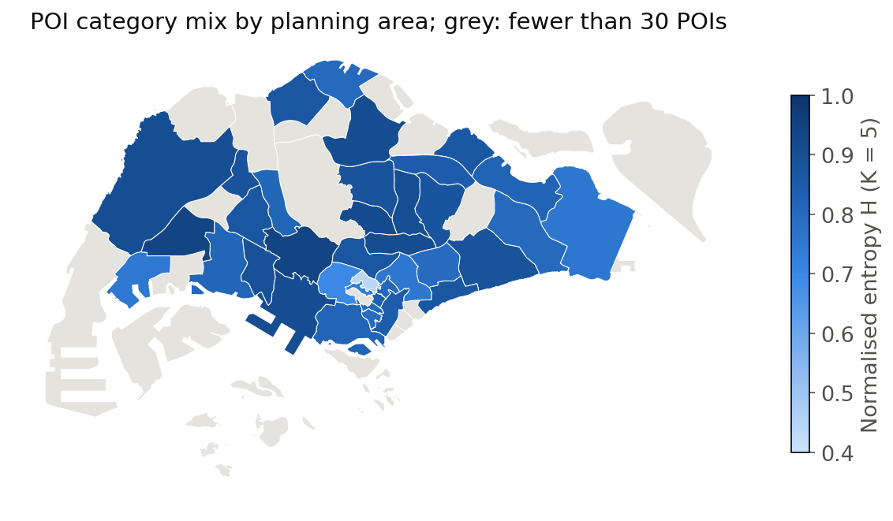</p><figcaption>Normalised entropy of five POI categories by planning area.</figcaption><figsubcaption>Data: LTSG POI sample; URA Master Plan 2019 planning areas. <a href="imgs/spdeng/IMAGE_CREDITS.md">Credits</a>.</figsubcaption></figure> 6,248 of 8,672 [sample POIs](data/singapore_poi_sample.csv) fall into K = 5 categories: health, education, finance, food and retail (a POI with several types goes to the first that matches). Newton scores 0.44 because 81% of its 58 POIs are health; Orchard scores 0.74 with 49% retail. Bukit Timah's 0.94 rests on only 123 POIs. ] --- name: urban-proxies-reviews ## 5. Review Case: What Can the Feature Measure? .cols[ .cell[ ### Reviews: Expressed Emotions on a Named Platform **Suitable for:** emotions, topics and photographed scenes that reviewers chose to post about a named place on the platform, within a defined period. [**Yang & Zhang (2024)**](https://doi.org/10.1016/j.ufug.2024.128285), *Urban Forestry & Urban Greening* 94, 128285, labelled 6,421 Google Maps reviews of East Coast Park (Jan 2019–Jun 2022) with seven basic emotions using BERT (a language model), and labelled scenes in shared photos with VGG-16 (an image model). Joy dominated (73.6%), followed by neutral (22.0%). **Interpretation limit:** reviewers are a small, self-selected group: about 1,800 labelled reviews a year against 7–7.5 million visits. Photos skew positive: only 8.3% of neutral or negative reviews had one. An emotion label describes the text, not necessarily the place. **Example features:** emotion shares by attraction and quarter; review counts; the five most likely scene labels for each photo. **Validation:** report counts beside percentages; check a sample by hand to see how often the model's labels are right; compare review numbers with visitor counts or surveys before drawing conclusions about park use. ] .cell[ <figure class="journal-figure"><p>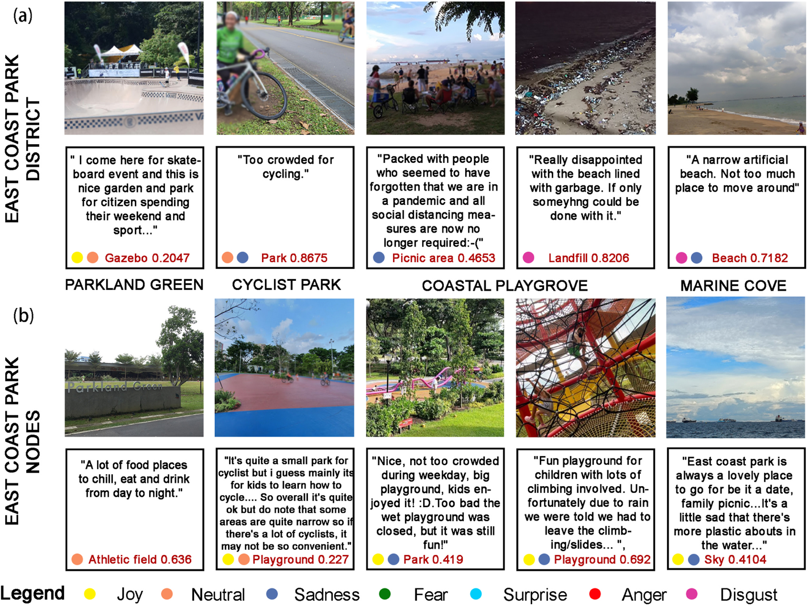</p><figcaption>Neutral and negative reviews with their photos, emotion labels and top-1 scene labels.</figcaption><figsubcaption>Yang & Zhang (2024), <i>Urban Forestry & Urban Greening</i> 94, 128285, Fig. 8. <a href="https://doi.org/10.1016/j.ufug.2024.128285">Paper</a> · <a href="https://creativecommons.org/licenses/by-nc/4.0/">CC BY-NC 4.0</a>; reproduced without alteration. Photos and review text: Google Maps users, as published in the article.</figsubcaption></figure> **Discuss:** the garbage review is labelled *disgust* and its photo *landfill*. Which label helps a park manager act, and what is still missing? ] ] .references[ - Yang, C., & Zhang, Y. (2024). [Public emotions and visual perception of the East Coast Park in Singapore: A deep learning method using social media data](https://doi.org/10.1016/j.ufug.2024.128285). Urban Forestry & Urban Greening, 94, 128285. ] ??? Reported by the paper: 6,421 emotion labels for the whole park; joy 73.56% and neutral 21.97%; 8.3% of neutral or fine-grained negative reviews had photos, and none labelled anger, fear or surprise did. The 7–7.5 million annual visits figure is the paper's, citing NParks. Teaching inference: "about 1,800 a year" is 6,421 labels over three and a half years, set against that visitor figure. Review counts measure participation on a platform: visiting, posting a review and attaching a photo are distinct behaviours, and missing reviews do not establish zero visits. The validation steps are proposed checks, not methods the paper used. --- name: reviews-integration class: dense ## 5. Review Case: Link Records to Places .cols[ .cell[ ### Reflection: How Review Text Becomes Spatial <div class="dg" style="grid-template-columns: minmax(0,1fr) auto minmax(0,1fr) auto minmax(0,1fr) auto minmax(0,1fr); column-gap:.3em"> <div class="box"><b>Review</b><br>text + photo<br><span class="sub">no coordinates</span></div><div class="arrow">→</div> <div class="box"><b>Place entry</b><br>“Bedok Jetty”<br><span class="sub">chosen by the reviewer</span></div><div class="arrow">→</div> <div class="box bg-ok"><b>Attraction</b><br>1 of 12<br><span class="sub">one location per entry</span></div><div class="arrow">→</div> <div class="box bg-ok"><b>NParks segment</b><br>Areas B–F<br><span class="sub">of a 15 km park</span></div> <div class="wide sub center">Each review inherits its entry's location: the match level is the entry, not the review.</div> </div> The emotion labels come from **non-spatial text**. The paper can map them only because each review was posted under a Google Maps place entry, and each entry stands for an attraction along the park. In effect, the platform has already geocoded the reviews, at entry level. Like a postcode match, every review on one entry shares one location, whichever part of the attraction it describes. **Discuss:** to compare review emotions with NParks visitor counts by segment, which units, which ID to join on, and which time window would you use? ] .cell[ ### The Same Integration Contract | Input | Spatial unit | Time | Integration rule | |---|---|---|---| | Review text | Place entry; no coordinates | Post date | Entry → attraction | | Shared photos | The same review | Post date | Linked to the text within each review | | 12 attractions | Points along the park | Not stated | Attraction → NParks segment, Areas B–F | | Whole-park entry | The full 15 km park | Post date | Analysed as a separate scale | **What the contract reveals:** - **Two scales, different entries.** Attraction reviews are not a subset of the whole-park reviews. - **Coverage filter.** Only non-commercial entries with ≥ 20 reviews were kept, and Areas A, G and H were excluded: the nodes show where people review, not the whole park. - **Text–photo matches.** Text and photo meet only within a review, and just 8.3% of neutral or negative reviews had a photo. - **Time.** A review's post date is not its visit date. ] ] .references[ - Yang, C., & Zhang, Y. (2024). [Public emotions and visual perception of the East Coast Park in Singapore: A deep learning method using social media data](https://doi.org/10.1016/j.ufug.2024.128285). Urban Forestry & Urban Greening, 94, 128285. ] ??? The paper does not describe its method as data integration; this slide is a teaching reading of it, using the integration contract from earlier in the lecture. From the paper: Google Maps Reviews provide no geo-information for researchers (Section 5.2); data came from different location entries at two scales, the full park and 12 attractions (Section 3.1); entries were selected by the keyword "East Coast Park", excluding commercial entries and those with fewer than 20 text reviews (Section 2.2); Areas A, G and H were excluded for their distance from residential areas and special uses (Section 2.1); nodes are grouped by NParks Areas B–F (Table 1); 8.3% of neutral or fine-grained negative reviews had photos (Section 4.4). Teaching inference: entry-level location, the comparison with a postcode match, and the post-date versus visit-date distinction follow from those facts; the paper does not test them. --- name: reviews-case-study class: dense ## 5. Review Case: Derive Labels and Test Their Meaning .cols3[ .cell[ ### From Text and Photos to Labels <figure class="journal-figure"><p>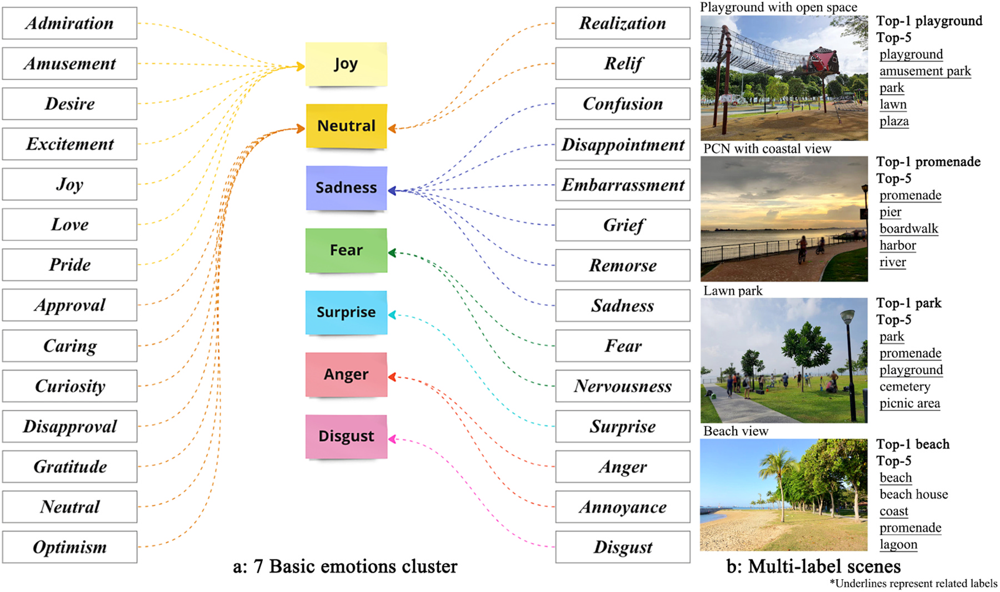</p><figcaption>27 detailed emotion labels merged into seven basic ones; each photo keeps its five most likely scene labels.</figcaption><figsubcaption>Yang & Zhang (2024), Fig. 3. <a href="https://doi.org/10.1016/j.ufug.2024.128285">Paper</a> · <a href="https://creativecommons.org/licenses/by-nc/4.0/">CC BY-NC 4.0</a>; reproduced without alteration.</figsubcaption></figure> | Step | What the authors did | |---|---| | Collection | Scraped from the website: Google's official API returned at most five reviews per place | | Text | BERT language model, further trained on GoEmotions (58k labelled Reddit comments) | | Photos | VGG-16 image model, trained on Places365 (photos of 365 scene types) | The paper does not report how accurate its labels are for East Coast Park. ] .cell[ ### Review Volume Follows Events <figure class="journal-figure"><p>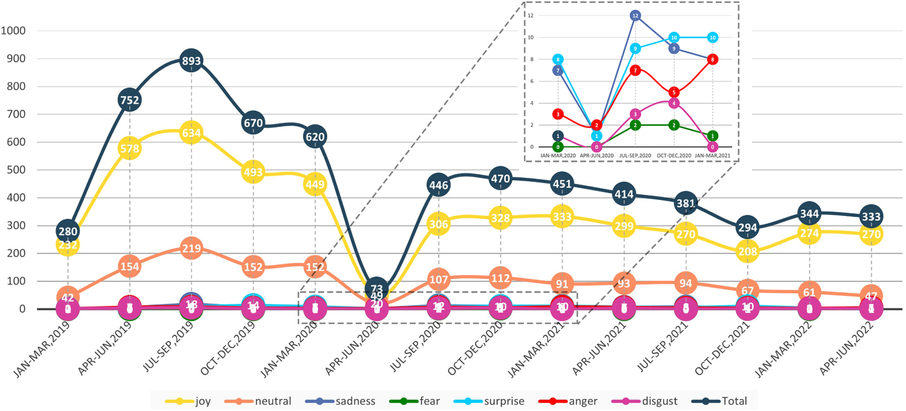</p><figcaption>Reviews per quarter by detected emotion, Jan 2019–Jun 2022.</figcaption><figsubcaption>Yang & Zhang (2024), Fig. 4. <a href="https://doi.org/10.1016/j.ufug.2024.128285">Paper</a> · <a href="https://creativecommons.org/licenses/by-nc/4.0/">CC BY-NC 4.0</a>; reproduced without alteration.</figsubcaption></figure> Reviews per quarter fell from 620 to 73 during the 2020 circuit breaker, and joy's share dipped to 67%. *Fear* appears five times in three and a half years. The authors (p. 8): social media data "are not suitable and useful for understanding the objective environmental characteristics of urban public spaces." ] .cell[ ### Check Small Numbers and Wrong Labels | Attraction | Reviews | Negative or surprise | |---|---|---| | Coastal Playgrove | 92 | 10 (10.9%) | | Bougainvillea Garden | 23 | 2 (8.7%) | | Singapore Wake Park | 196 | 16 (8.2%) | | Marine Cove | 238 | 14 (5.9%) | Counts from the paper's Appendix B. - *Fear* came from an urban legend; *sadness* from a rain closure and a finished flowering season. - The image model called sand and lawn **volleyball court**, and steel-roofed food courts **industrial area**. - Reviews carry no location tags or reviewer profiles, so who was unhappy, and where, stays unknown. **Discuss:** what extra data would test whether the joy share reflects the park's quality? ] ] .references[ - Yang, C., & Zhang, Y. (2024). [Public emotions and visual perception of the East Coast Park in Singapore: A deep learning method using social media data](https://doi.org/10.1016/j.ufug.2024.128285). Urban Forestry & Urban Greening, 94, 128285. - Demszky, D., et al. (2020). [GoEmotions: A dataset of fine-grained emotions](https://arxiv.org/abs/2005.00547). ACL 2020. - Zhou, B., et al. (2018). [Places: A 10 million image database for scene recognition](https://doi.org/10.1109/TPAMI.2017.2723009). IEEE TPAMI, 40(6), 1452–1464. ] ??? All counts on this slide are the paper's: Table 1, Fig. 4, Appendix B and Sections 4.1–4.4. Data came from the whole-park Google Maps entry plus 12 non-commercial attraction entries, each with at least 20 text reviews. The four attraction percentages match those reported in Section 4.3; the table adds the counts behind them. Joy's share in Apr–Jun 2020 was 49 of 73 reviews (67.12%). The paper attributes the 2020 drop to Singapore's circuit-breaker policy. It shows that review volume responds to access rules and events; it does not measure how many people visited. The volleyball-court and industrial-area errors are the authors' own explanations (Section 4.2): the Places365 training data defines volleyball court mainly by beach volleyball courts, and single-storey steel food courts resemble industrial buildings. This is domain shift: a model trained on one image population labels another. The paper states that non-commercial research collection is permitted under Google's policy. Students should check the current platform terms themselves before scraping any site. --- name: robustness class: dense ## 6. Validate: Revisit Scale and Boundaries .cols3[ .cell[ ### A Robustness Check in Five Steps 1. **Choose the scales to test before seeing results**, based on how the process works: e.g. 400 m and 800 m walking distances, subzones, H3 resolutions 7–9. A buffer distance is also a choice you made. 2. **Recompute** the same feature or model at every scale. 3. **Test boundaries at a fixed size:** shift the grid, or compare different zone systems of similar size. 4. **Compare** direction (+/−), strength and rankings; map where the top-ranked areas change. 5. **Report every scale.** Never pick whichever scale gives the strongest result. If the conclusion flips, it depends on scale: say so. ] .cell[ ### Singapore Example: Food and Finance POIs <figure><p>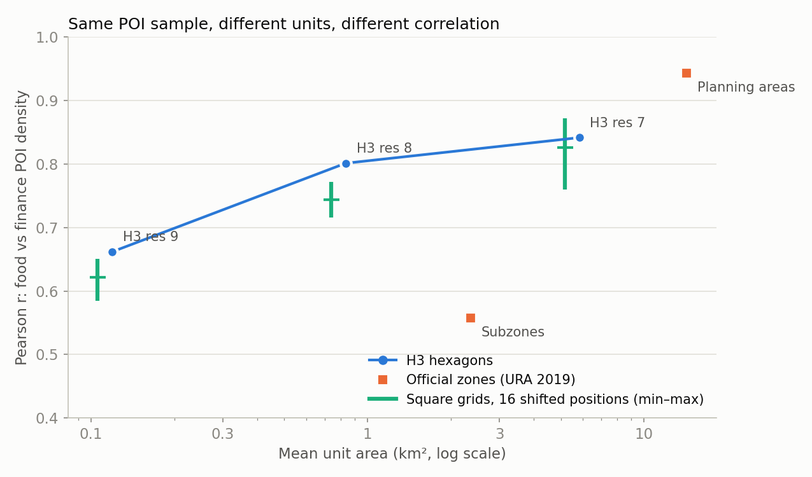</p><figcaption>One relationship, measured on 5 unit systems and 48 shifted grids.</figcaption><figsubcaption>Data: LTSG POI sample; URA Master Plan 2019; H3 v4. <a href="imgs/spdeng/IMAGE_CREDITS.md">Credits</a>.</figsubcaption></figure> - **Scale effect:** r falls from 0.84 (H3 res 7) to 0.66 (res 9). - **Zoning effect:** at the res-7 cell size, just shifting a square grid moves r between 0.76 and 0.87. - **What holds:** food and finance POIs appear together at every scale tested; *how strongly* depends on the units. ] .cell[ ### Python: Loop Over Resolutions ```python ll = list(zip(poi.lat, poi.lng)) cols = ["food", "finance"] rows = [] for res in (7, 8, 9): poi["c"] = [h3.latlng_to_cell(a, b, res) for a, b in ll] cells = sorted(h3.geo_to_cells(land, res)) n = poi.groupby("c")[cols].sum() n = n.reindex(cells, fill_value=0) rows.append((res, n.food.corr(n.finance))) # r = 0.84, 0.80, 0.66 ``` ### Other Multi-Scale Checks - Buffers or walking catchments at several distances - Density maps (kernel density) at several smoothing distances - Clustering measured across distances (Ripley's K) - Multiscale GWR: a regression that finds the best scale for each variable ] ] .references[ - Kwan, M.-P. (2012). [The uncertain geographic context problem](https://doi.org/10.1080/00045608.2012.687349). Annals of the Association of American Geographers, 102(5), 958–968. - Fotheringham, A. S., Yang, W., & Kang, W. (2017). [Multiscale geographically weighted regression (MGWR)](https://doi.org/10.1080/24694452.2017.1352480). Annals of the American Association of Geographers, 107(6), 1247–1265. ] ??? Method behind the figure: Pearson r between food and finance POI density (POIs per km²), all units including empty ones. H3 and square-grid cells are kept when their centre lies on land; they contain 8,542–8,648 of the 8,672 POIs, against 8,670 for the official zones. Each square-grid size matches the global mean area of an H3 resolution and is shifted to 16 positions (a 4 × 4 set of quarter-cell offsets); the bar shows the minimum to maximum r. The loop on the slide correlates counts rather than densities; because H3 cells at one resolution are nearly equal in area, it reproduces the figure's values. With unequal zones, such as subzones, divide by area first. Approaches that avoid zones altogether: network-distance accessibility, kernel density, point-level models, and multiscale geographically weighted regression, which estimates a separate bandwidth for each variable. Kwan's uncertain geographic context problem extends the same caution to buffers and activity spaces around people. --- name: workflow ## 6. Validate and Document the Final Table .cols[ .cell[ ### Check the Chain of Evidence - **Inputs:** inspect locations, duplicates, dates and unresolved records. - **Integration:** check how many records matched, and confirm one row per area and period. - **Surfaces:** test estimates against held-back readings, and show areas with no nearby data; smaller cells add no measurements. - **Features:** check what each value is divided by, missing values, and whether the feature really measures what you claim. - **Conclusions:** compare scales and boundaries. When testing a predictive model, keep test areas away from training areas in space and time: nearby records share information and make the model look better than it is. ] .cell[ ### Deliver a Reproducible Feature Table For each feature, record: - Source, date, licence and coverage - Target unit, CRS and time window - How it was joined, or split across areas - Formula and units, including what it is divided by - Settings, exclusions and check results Reopen the exported file and verify IDs, row counts, geometry and missing values. **Return to the question:** what can this table tell us about services, and what additional data would be needed to measure access? ] ] --- name: takeaways ## From Question to Evidence: Key Takeaways 1. **Frame:** define the question, observation unit and period. 2. **Prepare:** verify locations, geometry, identifiers and match quality. 3. **Integrate:** choose the units and check every join. 4. **Estimate:** interpolate only when justified; show where estimates are reliable. 5. **Construct:** give every feature a formula, say what it is divided by, and state what it cannot tell you. 6. **Validate:** revisit scale, check assumptions and document the final output. **A useful feature is traceable from its source records to the claim it supports.** ### Continue the Course <xL>Related lecture:</xL> <button onclick="window.location.href='week05_Cartography.html'">Cartographic Design</button> <xL>Related material:</xL> <button onclick="window.location.href='advanced_datawrangling.html'">Advanced Data Wrangling</button> <xL>Course menu:</xL> <button onclick="window.location.href='index.html'">Go Back to Menu</button>